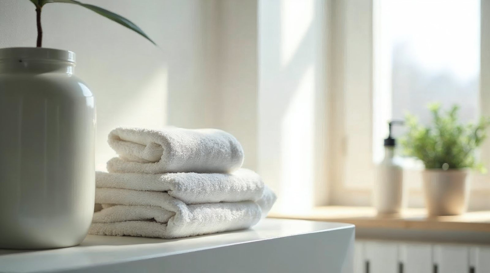

이종호 한의사 감수좋은꿈참사랑한의원 대표원장 (한의사 면허번호 19769)발행 2026-11-26 · 수정 2026-11-26
이 글의 차례
저녁 뉴스를 보시던 어르신이 바지를 걷어 올리고 정강이를 손톱으로 긁으십니다. 하얀 가루 같은 각질이 일어나고, 긁은 자리에는 붉은 줄이 몇 가닥 남습니다. 잠자리에 드시면 이번에는 등과 허리가 가려워 이불 속에서 몇 번이고 뒤척이십니다.
진료실에서 이런 말씀을 자주 듣습니다. "피부에 뭐가 난 것도 아닌데 왜 이렇게 가려운지 모르겠어요." 겉으로 보기에는 멀쩡한데 가려움만 남아 있으니, 가족에게 말하기도 애매하고 혼자 참다가 잠까지 설치시는 경우가 많습니다.
나이가 들면 피부도 함께 나이를 먹습니다. 기름막이 얇아지고 수분을 붙잡아 두는 힘이 줄어들면서, 예전과 같은 목욕과 같은 난방에도 피부는 훨씬 쉽게 마릅니다. 마른 피부는 작은 자극에도 예민하게 반응하고, 그 예민함이 가려움으로 나타납니다.
저는 이 가려움을 피부만의 일로 보지 않습니다. 잠, 드시는 약, 식사와 물, 마음의 긴장이 모두 가려움의 크기에 함께 관여합니다. 그래서 어디가 언제 가려운지부터 차근차근 나눠 보고, 생활에서 바꿀 수 있는 것을 하나씩 찾아갑니다.
노년기 피부소양증은 어떤 상태인가요?
피부소양증은 말 그대로 피부가 가려운 상태를 말합니다. 그 가운데 나이가 들면서 뚜렷한 발진 없이 가려움이 오래 이어지는 경우를 흔히 노년기 피부소양증이라고 부릅니다. 대개 피부 건조가 바탕에 깔려 있어서 겨울과 환절기에 더 심해지는 경향이 있습니다.
가장 흔한 자리는 정강이, 허벅지 바깥, 등, 허리, 옆구리입니다. 기름샘이 적고 옷에 쓸리기 쉬운 곳들입니다. 처음에는 하얗게 일어나는 각질 정도였다가, 긁기 시작하면 피부가 두꺼워지고 갈라지면서 가려움이 더 커지는 흐름으로 이어지곤 합니다.
이 상태를 단순히 나이 탓으로만 넘기기는 아깝습니다. 가려움 때문에 밤잠이 얕아지면 낮 동안 기운이 떨어지고, 피곤하면 또 가려움을 더 크게 느끼는 고리가 생깁니다. 이 고리를 어디서 끊을지 찾는 것이 진료실에서 함께 하는 일입니다.
왜 나이가 들면 피부가 더 가려워질까요
가장 큰 이유는 피부 장벽이 얇아지는 것입니다. 피부 맨 바깥에는 기름과 수분이 벽돌과 시멘트처럼 촘촘히 쌓여 있는데, 나이가 들면 이 층을 만드는 힘이 줄어듭니다. 틈이 생긴 벽으로 수분이 빠져나가고 바깥 자극은 더 쉽게 들어옵니다.
생활 속 이유도 여럿 겹칩니다. 몇 가지만 짚어 보면 이렇습니다.
- 뜨거운 물로 오래 씻거나 때를 세게 미는 목욕 습관
- 보일러를 세게 틀어 바닥과 공기가 바짝 마른 방
- 물을 적게 드시는 습관, 특히 밤에 화장실 갈까 봐 물을 줄이시는 경우
- 몸에 꼭 끼거나 털이 거친 내의
- 여러 가지 약을 오래 드시는 경우
드시는 약도 함께 살펴야 합니다. 일부 혈압약, 이뇨제, 진통제, 콜레스테롤 약 등은 사람에 따라 피부 건조나 가려움과 관련될 수 있다고 알려져 있습니다. 다만 약을 혼자 끊으시면 안 되고, 의심이 되면 처방한 선생님께 먼저 여쭤보셔야 합니다.
몸속 상태가 가려움으로 드러나는 경우도 있습니다. 콩팥이나 간 기능, 갑상선, 혈당, 철분 상태가 달라지면 피부가 가려울 수 있습니다. 그래서 오래 이어지는 가려움이라면 최근 건강검진 결과를 함께 보고, 필요하면 내과 검사를 권해 드립니다.
마음의 상태도 가려움과 가깝습니다. 혼자 지내시는 시간이 길거나 걱정거리가 많아 잠이 얕아지면, 같은 건조함에도 가려움을 더 크게 느끼십니다. 긁는 일이 손버릇처럼 굳어지기도 해서, 가려움을 살필 때는 하루를 어떻게 보내시는지도 함께 여쭙습니다.
습진이나 두드러기와는 어떻게 다를까요
두드러기는 모기 물린 것처럼 부풀어 오른 자국이 생겼다가 몇 시간 안에 사라지는 것이 특징입니다. 노년기 피부소양증은 이런 부풀어 오름 없이 가려움이 먼저이고, 보이는 것은 각질과 긁은 자국 정도인 경우가 많습니다.
습진은 붉은 기운과 오돌토돌한 발진, 진물이나 두꺼워진 피부가 함께 보입니다. 다만 소양증도 오래 긁으면 습진처럼 변할 수 있어서, 처음 어떤 모습이었는지를 여쭙는 것이 중요합니다. 정강이에 동전 모양으로 붉고 진물이 나는 자리가 생겼다면 피부과 확인을 함께 권합니다.
옴처럼 옮는 피부병도 구별해야 합니다. 손가락 사이, 손목, 겨드랑이, 허리띠 자리에 작은 구진이 생기고 밤에 특히 가렵고, 함께 지내는 가족이나 요양 시설의 다른 분들도 비슷하게 가렵다면 피부과에서 먼저 확인하시는 것이 좋습니다.
가려움은 어떻게 나눠 살피나요?
같은 가려움이라도 자리와 시각, 계기에 따라 살필 방향이 달라집니다. 진료실에서는 아래처럼 나눠 보며 이야기를 시작합니다.
- 정강이와 등처럼 마른 자리만 가려운지, 온몸이 고르게 가려운지
- 낮보다 밤에, 특히 이불 속에서 더 가려운지
- 목욕 직후나 옷을 갈아입을 때 가려움이 커지는지
- 새로 드시기 시작한 약이 있는 시기와 가려움이 시작된 시기가 겹치는지
- 가려움과 함께 피로, 입마름, 체중 변화가 있는지
마른 자리만 가렵고 겨울에 심해진다면 건조와 목욕 습관부터 봅니다. 온몸이 고르게 가렵고 계절과 상관없이 이어진다면 몸속 상태를 함께 살펴봐야 합니다. 이렇게 나눠 보는 것만으로도 다음 걸음이 한결 분명해집니다.

계절과 하루 리듬에 따라 달라지는 가려움
겨울에는 바깥 공기도 차고 마른 데다 실내 난방까지 더해져 피부의 수분이 하루 종일 빠져나갑니다. 그래서 가을이 깊어지면 정강이부터 하얗게 일어나기 시작하고, 한겨울에는 등과 허리까지 번지는 흐름을 자주 봅니다.
하루 안에서도 가려움은 오르내립니다. 낮에는 이런저런 일에 마음이 쏠려 덜 느끼다가, 저녁에 씻고 이불 속에 들어가 몸이 데워지면 가려움이 또렷해집니다. 밤에 피부 온도가 오르고 주의가 피부로 모이는 것이 함께 작용합니다.
잠이 얕은 날에는 가려움도 더 크게 느껴집니다. 새벽에 화장실 때문에 깨셨다가 가려움 때문에 다시 잠들지 못하시는 경우도 많습니다. 그래서 저는 가려움을 여쭐 때 잠드는 시각과 깨는 횟수를 늘 함께 여쭙습니다.
가족이 함께 도울 수 있는 것
어르신 혼자서는 등과 허리에 보습제를 바르기가 어렵습니다. 저녁 씻고 난 뒤 가족분이 등에 보습제를 발라 드리는 몇 분이, 밤사이 긁는 횟수를 줄이는 데 생각보다 큰 몫을 합니다.
가족분이 보시기에 긁은 자국이 늘었는지, 밤에 뒤척임이 잦은지, 낮에 졸거나 기운이 없어 보이시는지를 살펴 주세요. 어르신은 불편을 잘 말씀하지 않으시는 경우가 많아서, 곁에서 본 모습이 진료에 큰 도움이 됩니다.
먼저 이렇게 여쭙니다
처음 오시면 저는 대략 이런 순서로 여쭙니다. 가족분이 함께 오시면 평소 모습을 보태 주셔서 이야기가 훨씬 수월해집니다.
- 가려움이 언제부터 시작되었고, 주로 어느 자리가 가려우신가요?
- 하루 중 언제 가장 가렵고, 잠을 깰 정도인가요?
- 목욕은 얼마나 자주, 얼마나 뜨거운 물로, 때를 미시는지요?
- 드시는 약과 영양제는 어떤 것이 있고, 최근에 바뀐 약이 있나요?
- 물은 하루에 어느 정도 드시나요?
- 최근 건강검진에서 콩팥, 간, 혈당, 갑상선 이야기를 들으신 적이 있나요?
모든 질문에 정확히 답하지 못하셔도 괜찮습니다. 약 봉투와 가려운 자리를 찍은 사진 몇 장만 있어도 이야기의 절반은 시작된 셈입니다.
일상에서 먼저 해 볼 수 있는 것
마른 피부의 가려움은 생활에서 바꿀 수 있는 부분이 꽤 많습니다. 한꺼번에 다 하시기보다 쉬운 것 하나부터 골라 일주일 이어 보세요.
- 목욕물은 미지근하게, 시간은 10~15분 안쪽으로 줄이기
- 때수건 대신 손으로 부드럽게 씻고, 비누는 겨드랑이와 사타구니 위주로 쓰기
- 씻고 물기를 톡톡 두드려 닦은 뒤 3분 안에 보습제 바르기
- 방 습도는 40~60% 사이로 맞추고, 바닥 난방은 조금 낮추기
- 면처럼 부드러운 내의를 입고, 손톱은 짧게 다듬어 두기
- 낮 동안 물을 나눠 드시고, 저녁에는 양을 조금 줄이기
보습제는 향이 적고 진득한 것을 넉넉히 바르시는 것이 좋습니다. 정강이와 등처럼 손이 잘 닿지 않는 곳은 가족분이 도와주시면 훨씬 수월합니다. 하루 두 번, 아침과 저녁 씻은 뒤가 기본입니다.
가려울 때는 손톱으로 긁기보다 손바닥으로 지그시 누르거나, 시원한 물수건을 잠깐 대 보세요. 긁는 순간은 시원하지만 피부 장벽이 더 상하면서 다음 가려움이 더 커집니다. 잘 때 면장갑을 끼시는 것도 밤사이 긁는 것을 줄이는 데 도움이 될 수 있습니다.
잠자리 환경도 함께 봅니다. 전기장판을 높은 온도로 켜고 주무시면 피부가 밤새 마르고 데워져 가려움이 커지기 쉽습니다. 잠들 때까지만 켜 두거나 온도를 낮추고, 이불은 너무 두껍지 않게 조절해 보세요.
식사도 함께 봅니다. 술과 아주 매운 음식, 뜨거운 국물을 드신 날 밤에 가려움이 커진다는 분이 계십니다. 이런 날을 기록에 표시해 두시면 나에게 맞지 않는 음식을 찾는 데 도움이 됩니다. 입이 마르신다면 물을 조금씩 자주 드시는 습관을 함께 들여 보세요.
한의원에서 함께 살필 수 있는 경우
- 발진은 거의 없는데 마른 자리가 밤마다 가려워 잠을 설치는 경우
- 몸이 마르고 입마름, 변비, 잠이 얕은 것이 함께 있는 경우
- 피부과 치료를 받으면서 잠과 몸의 건조함을 함께 살피고 싶은 경우
- 가려움 때문에 예민해지고 마음이 지치신 경우
좋은꿈참사랑한의원에 오시면 먼저 아래 '먼저 확인이 필요한' 신호가 없는지부터 봅니다. 그다음 맥을 짚고 가려운 자리와 피부 상태를 살피며, 잠과 소화, 대소변, 입마름을 여쭙습니다. 한의학에서는 나이 들며 몸의 진액이 줄고 피부가 마르는 흐름을 함께 봅니다.
진찰한 내용을 바탕으로 생활에서 바꿔 볼 것 하나와 함께 침, 한약 상담 가운데 지금 상태에 맞는 것을 정합니다. 한약을 상의할 때는 드시는 약을 모두 확인하고 신중하게 정합니다. 처방받은 약은 처방한 선생님과 상의 없이 멈추지 않습니다.
한의원 진료는 피부과나 내과 진료를 대신하는 것이 아니라 나란히 가는 것입니다. 피부과에서 바르는 약과 먹는 약을 챙기고, 한의원에서는 그 사이의 잠과 건조함, 몸의 리듬을 함께 살핀다고 생각해 주시면 됩니다.
이렇게 기록해 오시면 상담이 쉬워집니다
가려움은 진료실에서 잠깐 보는 피부보다 집에서 지낸 기록이 더 많은 것을 알려 줍니다. 1~2주 정도만 간단히 적어 보세요.
- 가장 가려웠던 자리와 시각
- 목욕한 날, 물 온도, 때를 민 날 표시
- 보습제를 바른 횟수
- 밤에 가려워 깬 횟수
- 새로 드신 약이나 음식, 바뀐 옷이나 세제
- 방 온도와 습도, 전기장판 사용 여부
가려운 자리를 같은 각도에서 사진으로 남겨 두시면 좋습니다. 긁은 자국이 줄어드는지, 각질이 덜 일어나는지를 나란히 놓고 보면 무엇이 도움이 되었는지 함께 찾기가 쉬워집니다.
가려움과 오래 지내지 않으시도록
나이가 들면 가려운 게 당연하다고 여기며 참고 지내시는 분이 많습니다. 하지만 밤마다 긁다 깨는 일이 반복되면 잠도 기운도 함께 줄어듭니다. 가려움은 참아야 할 것이 아니라 살펴볼 신호입니다.
피부가 마르는 흐름은 하루아침에 생기지 않았듯이, 달라지는 데에도 시간이 걸립니다. 보습과 목욕 습관을 바꾸고 2~3주는 지켜보셔야 피부가 덜 당기고 긁는 횟수가 줄어드는지 가늠할 수 있습니다. 조급해하지 마시고 기록과 함께 천천히 가 보시면 됩니다.
이번 주에는 목욕물 온도를 조금 낮추고, 씻은 뒤 3분 안에 보습제 바르기 하나만 해 보세요. 다음에 오시면 일주일 동안의 가려움 기록부터 함께 펼쳐 보겠습니다.
이런 증상은 먼저 확인이 필요합니다
- 가려움과 함께 눈 흰자나 피부가 노랗게 변하고 소변 색이 짙어진 경우
- 가려움과 함께 체중이 빠르게 줄고 밤마다 땀에 젖으며 열이 이어지는 경우
이런 신호가 있으면 한의원보다 가까운 병원이나 응급실을 먼저 찾으세요.
함께 읽으면 좋은 글
- 부모님이 밤마다 온몸이 가렵다며 긁으실 때는 무엇을 먼저 살피나요?
- 겨울이면 정강이가 하얗게 일어나고 밤에 가려울 때는 어떻게 살피나요?
- 보일러를 세게 틀고 자면 등과 종아리가 가려운 것은 어떻게 살피나요?
- 가려움이 낮에 심한지 밤에 심한지는 왜 묻고, 어떻게 적어 두나요?
- 저녁만 되면 두드러기가 올라왔다 사라지기를 반복할 때는 어떻게 살피나요?
여쭙는 것
- 가려움이 언제부터 시작되었고, 주로 어느 자리가 가려우신가요?
- 하루 중 언제 가장 가렵고, 잠을 깰 정도인가요?
- 목욕은 얼마나 자주, 얼마나 뜨거운 물로, 때를 미시는지요?
생활에서 해 볼 것
- 목욕물은 미지근하게, 시간은 10~15분 안쪽으로 줄이기
- 때수건 대신 손으로 부드럽게 씻고, 비누는 겨드랑이와 사타구니 위주로 쓰기
- 씻고 물기를 톡톡 두드려 닦은 뒤 3분 안에 보습제 바르기
한의원에서 함께 살필 것
- 발진은 거의 없는데 마른 자리가 밤마다 가려워 잠을 설치는 경우
- 몸이 마르고 입마름, 변비, 잠이 얕은 것이 함께 있는 경우
- 피부과 치료를 받으면서 잠과 몸의 건조함을 함께 살피고 싶은 경우
먼저 확인이 필요한 신호
- 가려움과 함께 눈 흰자나 피부가 노랗게 변하고 소변 색이 짙어진 경우
- 가려움과 함께 체중이 빠르게 줄고 밤마다 땀에 젖으며 열이 이어지는 경우
한눈에 보는 표
| 구분 | 핵심 |
|---|---|
| 여쭙는 것 | 가려움이 언제부터 시작되었고, 주로 어느 자리가 가려우신가요? 하루 중 언제 가장 가렵고, 잠을 깰 정도인가요? |
| 생활에서 해 볼 것 | 목욕물은 미지근하게, 시간은 10~15분 안쪽으로 줄이기 때수건 대신 손으로 부드럽게 씻고, 비누는 겨드랑이와 사타구니 위주로 쓰기 |
| 한의원에서 함께 살필 것 | 발진은 거의 없는데 마른 자리가 밤마다 가려워 잠을 설치는 경우 몸이 마르고 입마름, 변비, 잠이 얕은 것이 함께 있는 경우 |
| 먼저 확인이 필요한 신호 | 가려움과 함께 눈 흰자나 피부가 노랗게 변하고 소변 색이 짙어진 경우 가려움과 함께 체중이 빠르게 줄고 밤마다 땀에 젖으며 열이 이어지는 경우 |
자주 묻는 질문
나이가 들면 피부가 가려운 건 어쩔 수 없는 건가요?
피부가 마르기 쉬워지는 것은 맞지만, 목욕 습관과 보습, 방 습도, 잠자리 온도를 바꾸면 가려움이 줄어드는 경우가 많습니다. 오래 이어진다면 드시는 약과 몸속 상태도 함께 살펴봅니다.
때를 밀지 않으면 찝찝한데 어떻게 하나요?
때를 세게 밀면 피부 장벽이 함께 벗겨져 더 마르고 가려워지기 쉽습니다. 미지근한 물에 손으로 부드럽게 씻고, 씻은 뒤 보습제를 바르는 쪽을 권합니다.
혈압약 때문에 가려운 것 같은데 약을 끊어도 되나요?
혼자 끊으시면 안 됩니다. 의심이 되시면 처방한 선생님께 가려움이 시작된 시기와 함께 말씀해 주세요. 약 조정은 처방한 선생님이 판단하십니다.
피부과 약을 쓰면서 한의원 진료를 함께 받아도 되나요?
쓰고 계신 약을 알려 주시면 그에 맞춰 진료 방향을 정합니다. 한약을 상의할 때는 드시는 약을 모두 확인하고 신중하게 정합니다.
보습제는 어떤 것을 고르면 좋나요?
향과 색소가 적고, 바르고 나서 촉촉함이 오래 남는 진득한 제형을 권합니다. 비싼 것보다 넉넉히 자주 바를 수 있는 것을 고르시는 것이 더 중요합니다.
좋은꿈참사랑한의원은 재진 때 지난번 이야기부터 이어서 여쭙니다. 진료시간과 예약은 오시는 길에서 확인하세요.
어디서 상담받을 수 있나요?
좋은꿈참사랑한의원은 서울 동작구 만양로2길 2 신성빌딩 3층·5층(서울 동작구 상도동, 7호선 상도역 3번 출구 근처)에 있습니다. 한의사 3명(이종호 대표원장, 조영기 수석진료원장, 정원영 진료원장)이 진료합니다. 진료시간은 평일 09:30~20:00(점심 13:00~14:00), 토·일·공휴일 09:30~15:00이며, 방문 전 전화로 확인을 권합니다. 예약은 네이버 예약, 카카오톡 상담, 전화 02-815-7510로 받습니다.
이 글은 일반적인 건강 정보이며 개인의 진단이나 치료를 대신하지 않습니다. 증상이 있거나 복용 중인 약이 있다면 진료를 통해 확인하세요. 치료 효과는 개인마다 다를 수 있습니다.
작성 기준: 일반적으로 알려져 있는 건강 정보를 참고해 정리했습니다(대표원장 감수). 증상 기록은 1~2주 동안 하루 1회, 비슷한 시간에 적어 오시면 지난 상태와 비교하기 쉽습니다.